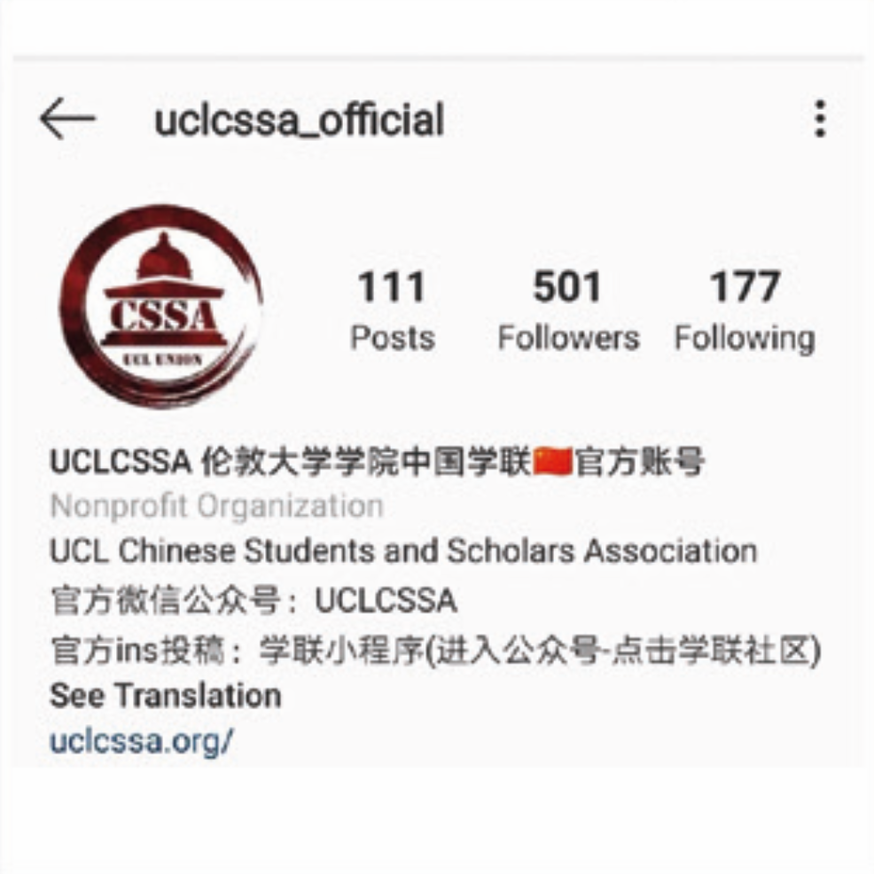

关于 UCL CSSA¶
学联介绍¶
伦敦大学学院中国学生学者联谊会(UCLU-CSSA)是一个受中国驻英大使馆指导，且在UCL Union注册的非盈利性学生组织。伦大学联一直本着全心全意为学生服务的宗旨， 致力于丰富学生业余生活，为学生解决生活困难，搭建学生学者交流平台，增进中英两国学术与文化交流，并增强中国学生的凝聚力。长期以来伦大学联得到了驻英大使馆、UCL 学生学者以及英国各界华人的广泛关注与认可。
伦大学联一直为中国留学生提供全面的帮助与支持。从留学准备，到在英学习、文体活动，再到回国就业，学生学者均可在学联找到相关活动或信息。
除此之外，每年 8-9 月学联会代表 UCL 校方为 UCL 的新生举办大型的临行准备会， 并发布内容全面的新生手册。该活动以 UCL 学联为平台，更加紧密的将学生，学联，学校三方结合起来，深化了解，建立高质量的沟通。
加入我们¶
| 对象 | 所有伦敦大学学院注册学生 (本科 / 硕士 / 博士) |
| 时间 | 2020 年 9 月底~10 月初 |
| 形式 | 届时会发布正式招新推文，请持续关注 UCLCSSA 公众号 |
我们期待你的加入!
部门介绍¶
学联下属了诸多职能部门与兴趣部门，每一个部门都会践行学联的宗旨，尽力满足大家在学习、生活、娱乐方面的各种需求，也让每一位参与学联的同学找到自己独特的价值。
外联部¶
外联部负责学联一切的对外联系工作，主要通过与国内外各大企业以及其他相关机构进行商业推广合作，为学生们的日常留学生活提供便利和支持。外联部日常工作有与公司或其他组织进行商谈，审核并签署合作合同，以此来帮助同学们与外界企业、机构建立起联系。让更多的学生们能够受到优惠和便利，并开拓、加深学联与各大企业即其他社会团体的联系，是外联部长期以来的宗旨。
事业部¶
伦大学联事业部致力于联合各大海内外知名企业和已在企业中工作的优秀校友伙伴，为 UCL 的学生提供一流的人脉资源以及就业、创业机会。事业部的活动与每一年的求职时间线紧密结合。我们希望每一场活动都能够扫除一些你对实习申请过程中的担忧与困惑，点亮你未来人生规划的道路。
投资部¶
本部门面向的是对投资、金融资本市场感兴趣的同学，为大家提供交流投资心得、学习股票交易、参与金融市场相关比赛的平台。部门会定期产出投资周报及科普类文章，包括每周股市总结、复盘、每周IPO、并购案例分析以及行业报告等等。为对未来想从事资产管理、资本市场、投资银行等相关职业方向的同学提供交流和实操机会，拓展资本市场知识。
文娱部¶
文娱部的宗旨是为中国留学生在国内外组织各种各样的学联活动。我们的目的是为了给大家的繁忙的学习生活中带来更加丰富的生活以及提供一个结交各路好友的平台。文娱部的工作非常锻炼社交能力，组织能力以及公关能力。如果你是一个有好的创意，喜欢交际的同学，文娱将非常欢迎你的加入!
文化部¶
文化部的核心宗旨是丰富同学们的精神生活，通过文化活动连结UCL的同学们。往年的元宵庙会总是一场同学们无比期待的年度盛事，另外，文化部在独立公众号上推出的美食、艺术、音乐剧、诗歌和歌单影单等栏目也备受广大同学的喜爱。在这里，你也可以发出你的声音，展示你的作品，找到与你有着相同兴趣爱好的同学，和他们一起玩耍。文化部的服务对象不仅限于 UCL 的中国留学生，自身也在努力搭建一座中西方文化交流的桥梁。我们期待在已有传统活动的基础上，和大家共同经历更多新鲜很酷的精彩活动。
宣信部¶
宣传信息技术部 ( 简称宣信部 ) 主要负责学联的宣传工作。宣信部致力于与学生间建立高效的沟通，及时且高质量传递学校资讯与活动信息。我们由文案排版组，设计组， 摄影组，信息技术组和对接组五个小组构成。 作为学联人数最多，组别最丰富的部门，宣信部融合了多种多样的小伙伴。无论你是喜爱文字，爱好摄影，擅长设计，还是一枚 IT 大佬或是对自媒体运营感兴趣，你都可以在这里找到属于自己独一无二的位置。
体育部¶
体育部是一个开设运动社团以及组织相关娱乐活动的执行部门。体育部开设了篮球社，羽毛球社，女篮社，网球社，跑步社，足球社和电竞社等社团。各个社团将会定期举行校内外联赛，你可以一展风采，为团队胜利拼搏。在这里你会发现，有很多有趣而又充满活力的伙伴可以结识，让你对伦敦的记忆不止停留在学校里，而更是在这享受蓝天白云，生气蓬勃的自然生活之间。
艺术团¶
伦大学联有一支仙气十足的团体——艺术团。 艺术团作为伦大学联最大的兴趣部门，共由六个部门组成:合唱队、乐团、韩舞队、民舞队、戏剧社和说唱社。每个部门都有每周固定的排练时间，也有大量的演出机会。我们不仅是每年大大小小演出(春晚、Ofund) 的主力军，更聚集了很多志同道合、 有相同爱好的有趣灵魂。
中文教育部¶
中华文化的命脉和血缘，在远离家乡的环境中往往生长出蓬勃的生命力。任何发色瞳色的外国友人都可能对着炎黄面孔的你说出一句“你好”，生涩的口音中饱含对中文的好奇与渴求。自 2010 年起，中文教育部(UCL CSSA Mandarin Education Society)每周为外国友人提供免费中文课程，同时开展迷你中国文化节、汉语小课堂、趣味街访等寓教于乐的活动，在 B 站、Youtube、Facebook 等平台收获了大量关注。
春晚组¶
春晚组作为学联兴趣部门之一，负责承办每年的伦大春晚。组内人员分别担任策划、摄制、宣传、场务，各司其职又团结一致， 组成了学联最热闹和谐且最爱团建的团队之一。从初步主题的策划到宣传片的拍摄，从海选到彩排，从周边的定制到票务的售卖， 从设备租借到舞美编排，只要你想，舞台的每个角落都可以由你搭建。
华语辩论队¶
UCL华语辩论队于 2008 年成立。我们不断成长，广泛参与英国华语辩论的各项赛事并取得了丰硕的成果。这十年间华语辩论队不断获得了英国各学校的积极支持及好评，这些责任和成绩都是对我们最好的肯定。
Ofund慈善部¶
慈善部成立的初衷是为了在帮助有需要的人同时，提升各位同学的能力。慈善部会不定期举行许多公益活动，如跬步千里，关爱留守儿童与孤寡老人，以及与领养流浪动物相关的慈善活动等。慈善部与Ofund（Overseas Chinese Students Children‘s fund）也保持着密切的合作。每年冬季，我们都会与伦敦其他高校联合举办Ofund慈善晚会。每年暑期，慈善部也会组织志愿者前往贫困地区的中小学进行支教活动。
UCL慈善部致力于为想要了解公益的UCLer提供更好的公益慈善平台，并鼓励大家付诸行动！
2021-2022 committee¶
| 职位 | 姓名 |
|---|---|
| 主席 | 胡寅瑞 |
| 对内副主席 | 魏一凡 |
| 对外副主席 | 刘晓林 |
| 财务长 | 张可源 |
| 学生事务处书记 | 叶香杉 |
| 秘书长 | 王天一 |
| 外联部部长 | 崔镐麟 |
| 事业部部长 | 屈汶奇 |
| 宣传信息技术部部长 | 孔维嘉 |
| 文化部部长 | 冯子纯 |
| 文娱部部长 | 黄嘉睿 |
| 体育部部长 | 朱景晖 |
| 艺术团团长 | 张梓歆 |
| Ofund慈善部部长 | 陈泉玲 |
| 中文教育部部长 | 魏语千 |
| 华语辩论队队长李柔嘉 | 李柔嘉 |
| 春晚总监制 | 王琪悦 |
| 春晚总导演 | 王大航 |
宣传平台¶
CSSA UCL公众号¶
公众号推文一直以来都是学联最主要的宣传平台，更新频率为每日。在这里，你可以获知学联最新的活动及福利、UCL 的资讯新闻、有价值的留学信息，了解英国文化，听见不一样的观点，领略更广阔的世界。微信搜索：CSSA UCL
小程序¶
小程序在手，走遍 UCL 无敌手!小程序几乎具备了你在 UCL 校园需要的一切功能，不管是查询图书馆实时余位，查看专属你的 UCL 课表；还是发布二手闲置、房屋信息；亦或是查看 TFL交通状态，查看周边美食 ......
官方网站¶
https://www.uclcssa.org或直接搜索：UCLCSSA中国学联
想要了解学联的最新活动？想要更全面的了解学联？想要查找学联的部门介绍，找到最合适自己的部门？想要看往期所有学联活动的视频及录像？学联官网丰富的内容和帮助信息，帮助你解决各种需求！
Instagram¶

伦大学联官方 Ins 充满着伦敦和 UCL 的美图， 是摄影爱好者们不可错过的宝藏账号！关注学联 Ins，看看大家记录生活的独家视角吧!